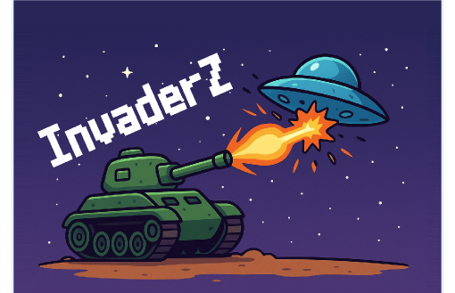

Agenda Fácil
Sistema de agendamento online para clínicas.
Tecnologias
React, Node.js, PostgreSQL
Ver projeto
Sistema de agendamento online para clínicas.
React, Node.js, PostgreSQL
Ver projeto
Loja virtual de pet-shop com carrinho e pagamento.
JavaScript, Python
Ver projeto
Um jogo simples no estilo space invaders feito totalmente no scratch durante o curso do CS50x de Harvard.
Scratch, ChatGPT para geração de imagem e Photoshop para retoques.
Ver projeto
Bubble's rush é um jogo no estilo flap-bird na qual você controla uma pequena bolha de hidrogênio que está viajando na solução alcalina de um eletrolizador, buscando se juntar com mais moleculas de hidrogênio e evitando as de oxigênio para manter sua pureza. O objetivo do projeto é conscientizar as pessoas sobre o processo de eletrolize através de um jogo simples porém viciante.
GDevelop, ChatGPT para geração da thumbnail
Ver projeto
A coleira Pet Tag é uma coleira revolucionaria para seus amigos peludos, ela contem o nome deles na frente do pingente e um qr code atrás que ao ser escaneado leva para um perfil digital do seu animalzinho, onde tem todas as infos dele que o dono decidir colocar, além disso a pet tag possui um chip que funciona com bluetooth de baixa frequencia e outros ondas de baixa frequencia utilizadas por smartphones o qual todos os celulares podem captar e enviar o sinal para você, triangulando a posição aproximada do seu animalzinho quando ele foge ou até mesmo conectando direto ao seu bluetooth para saber onde ele está na sua casa, assim você nunca mais passará um susto procurando seu coleginha.
JavaScript, Python, Bluetooth, React
Ver projeto
Turismo Virtual é uma experiencia virtual desenvolvida para pessoas com deficiencia que gostaria de vistiar atrações turisticas ou trilhas com dificil acesso, viabilizando e democratizando o turismo e tornando acessivel para todos através dos oculos de realidade virtual.
Unreal engine 5, C++, VR tool kit
Ver projeto